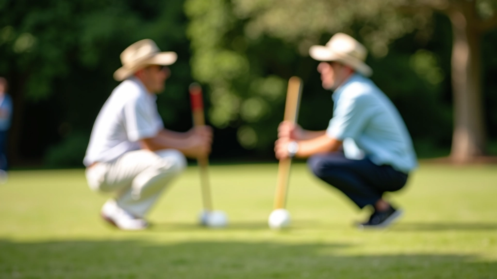
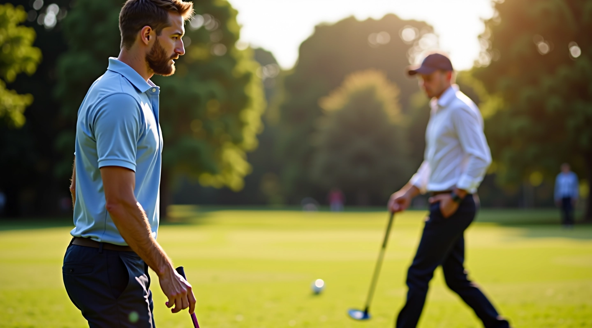
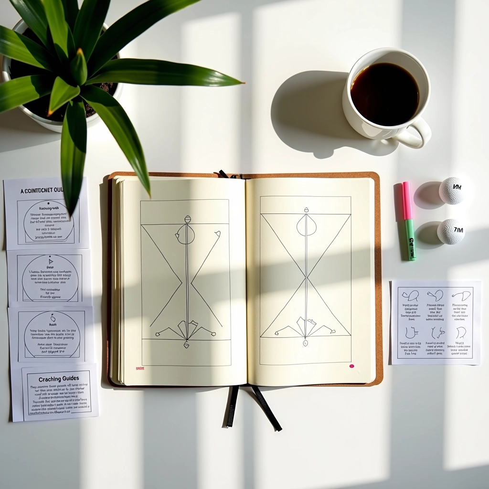
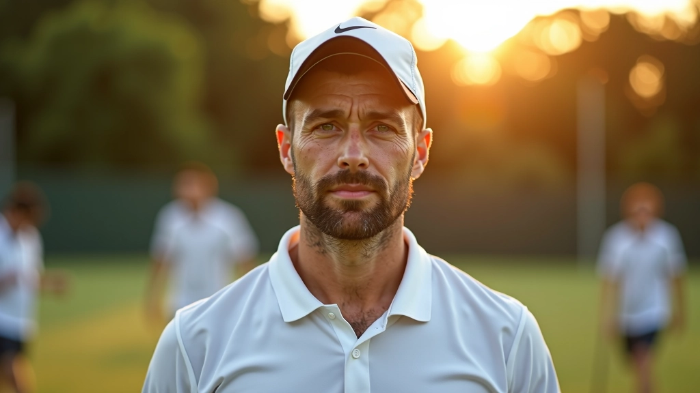
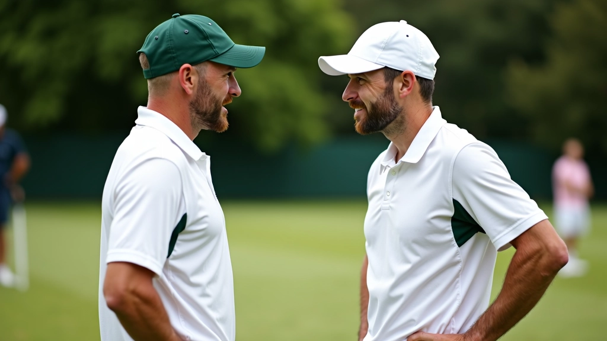
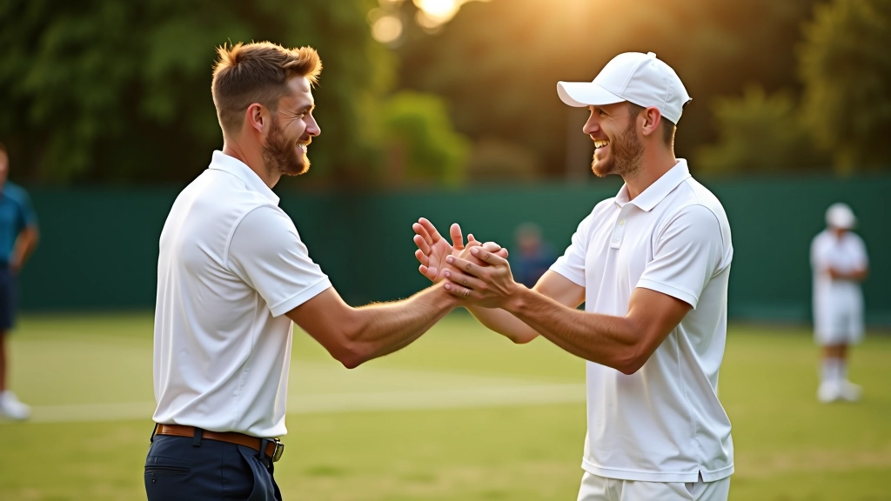
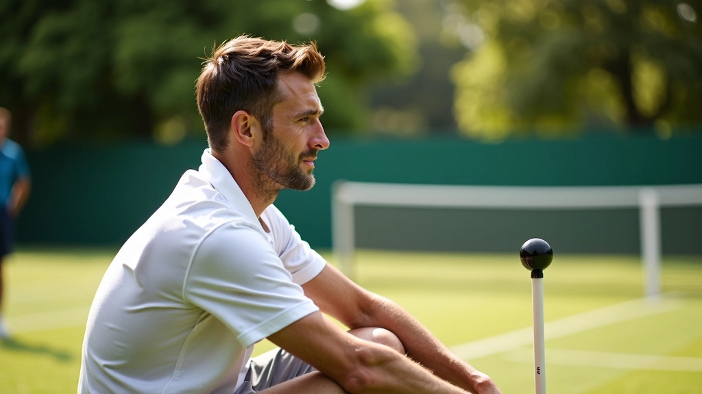
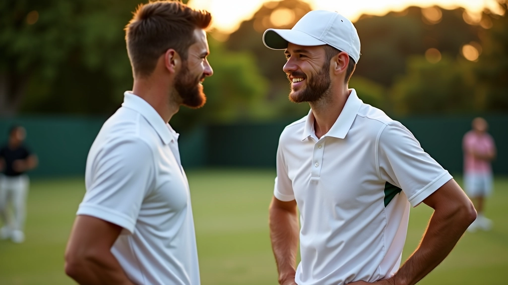
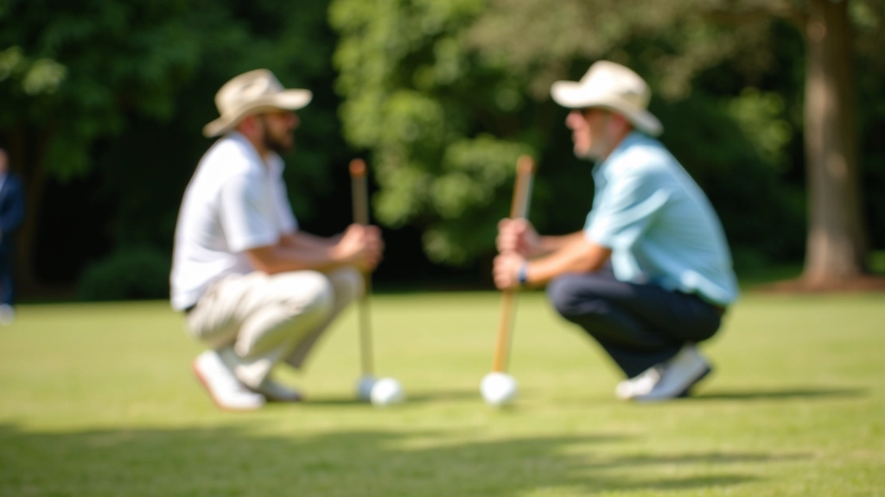

كيفية قراءة لغة جسد شريكك على الملعب
تعلم كيفية فهم إشارات شريكك من خلال حركاته وموقفه الجسدي
كيفية الحفاظ على تركيزك وتقويتك للشراكة تحت الضغط


فريق التحرير والمراجعة
كتبه فريق التواصل التحريري، متخصص في تقديم إرشادات عملية وسهلة الفهم حول التنسيق والتواصل في الكروكيه الثنائي.
لحظات قليلة في الكروكيه تشعرك بالضغط الحقيقي. النقطة الحاسمة في الشوط الثالث. الخصم يتقدم بنقطتين. شريكك للتو أخطأ ضربة سهلة. في هذه اللحظات، يُختبر كل شيء بنيتموه معاً.
الحقيقة؟ معظم الشراكات لا تنهار لأن اللاعبين ليسوا ماهرين. تنهار لأنهما لا يعرفان كيفية البقاء معاً عندما تصبح الأمور صعبة. الخلاف سريع. يأتي الإحباط بسرعة. وفي بضع ثوان، تنقسمان.
لكن يمكن تعلم هذا. لا يتعلق الأمر بكونك بطلاً. يتعلق بفهم ما يحدث في رأس شريكك، والبقاء صريح التواصل، وتجاوز اللحظات الصعبة معاً.


الضغط في الكروكيه يأتي من عدة اتجاهات. أولاً، هناك الضغط الخارجي — النقاط المهمة، الخصم الجيد، الأعين عليك. لكن الضغط الأخطر يأتي من الداخل.
عندما تشعر أنك تخذل شريكك، تتغير الديناميكية بسرعة. قد تصبح دفاعياً. قد تتردد في الضربات. قد تبدأ في لوم نفسك أو شريكك. والآن أنت لا تركز على اللعبة — أنت تركز على الشعور.
الخلافات الحقيقية تبدأ هنا. عندما يشعر أحدكما أنه يلعب بشكل أفضل من الآخر. عندما يشعر الآخر أن خياراته لا يتم احترامها. عندما تتراكم الإحباطات بدلاً من معالجتها.
هذا المقال يقدم إرشادات تعليمية وعملية لتحسين التواصل والتعامل مع الضغط في شراكات الكروكيه. النصائح هنا مبنية على تجارب عملية ولا تحل محل التدريب المباشر مع مدرب متخصص. كل شراكة فريدة، والظروف تختلف. استخدم هذه المعلومات كنقطة بداية لفهمك الخاص.
لا تنتظر اللحظة الحاسمة لتقول لشريكك ما تشعر به. قبل المباراة، تحدثا عن كيف ستتعاملان مع الأخطاء. ماذا تفضل؟ هل تريد كلمات تشجيع مباشرة أم تريد مسافة قليلة؟ كم مرة ستتحدثان بين الأشواط؟
هذا التفاهم المسبق يوفر عليكما ساعات من التخمين عندما يكون كل شيء على المحك.
طوّرا نظام إشارات بسيط. لا تحتاج إلى أن تكون معقدة. قد تكون نظرة معينة. قد تكون طريقة تصافح أيدي معينة. شيء يقول: "أنا هنا معك. نحن في هذا معاً." عندما يأتي الضغط، يمكن لهذا الشيء الصغير أن يعيد التركيز.


الخلاف سيحدث. قد يقول أحدكما شيئاً حاداً. قد تشعران بالإحباط من بعضكما. هذا طبيعي. ما يهم هو ما تفعلانه بعده.
أولاً: خذا استراحة. حرفياً. قفا جانباً للحظة. تنفسا بعمق. لا تتحدثا عندما تكونان في ذروة الانفعال. الكلمات التي تقال الآن لن تُنسى.
ثانياً: كونا محددين. بدلاً من "أنت لا تركزين"، قولي "في الشوط الثاني، كنت قلقة عندما لم تشيري إلى الخيار البديل." هذا يعطي شريكك شيئاً حقيقياً يعمل عليه.
ثالثاً: افصلا بين السلوك والشخص. "كنت محبطاً من هذه الضربة" مختلف تماماً عن "أنت سيء في هذا." الأول يمكن إصلاحه. الثاني يحرق الجسور.
هنا حيث يحدث الشفاء الحقيقي. بعد المباراة مباشرة، لا تعودا إلى البيت بصمت. لا تجعلا الضغط يتسرب إلى الأيام التالية.
تحدثا عما حدث. ليس بطريقة لوم. بطريقة فضول. "كيف شعرت عندما..." أو "لاحظت أنك بدوت مرتاح القلق في الشوط الأول. حدث شيء ما؟" هذا يفتح الحوار الحقيقي.
ثم افعلا شيئاً معاً بعيداً عن الملعب. اشربا قهوة. امشيا قليلاً. دعا العلاقة تتذكر أنها أكثر من مجرد اللعبة. هذا يعيد التوازن.
الشراكات الحقيقية تُبنى في هذه اللحظات — بعد الخلاف، بعد الضغط. عندما تختاران البقاء معاً على أي حال.

الضغط سيأتي دائماً. المباريات المهمة ستأتي. الأخطاء ستحدث. لكن شراكة قوية تتحمل كل ذلك. ليس لأن الشريكين لا يختلفان. بل لأنهما يعرفان كيف يختلفان بطريقة تجعلهما أقوى.
ابدآ بالتواصل قبل أن تحتاجا إليه. طوّرا إشاراتكما الخاصة. تحدثا عندما تكون الأمور صعبة. ثم شفيا معاً بعد ذلك. هذا هو الطريق إلى شراكة تستحق اللعب معها.

تعلم كيفية فهم إشارات شريكك من خلال حركاته وموقفه الجسدي
استراتيجيات للتواصل الواضح والفعال أثناء اللعب

كيفية تطوير أساس قوي من الثقة المتبادلة